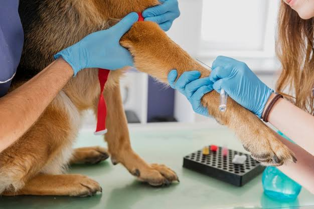

Importancia del Calendario de Vacunación Felina
Publicado en 2026 por el Equipo San Marcos

Las vacunas son la mejor herramienta inmunológica para proteger a los gatos contra virus potencialmente mortales como la Leucemia Felina, el Calicivirus y la Panleucopenia.
Incluso si un gato no sale de casa, existen patógenos que pueden ser transportados de manera indirecta en el calzado o ropa de los tutores. Por ello, cumplir con las dosis iniciales de cachorro y sus refuerzos anuales en etapa adulta es fundamental.
En Veterinaria San Marcos realizamos evaluaciones de salud previas a la administración de cualquier vacuna, garantizando que el paciente se encuentre libre de parásitos o fiebre para asegurar la efectividad del tratamiento.